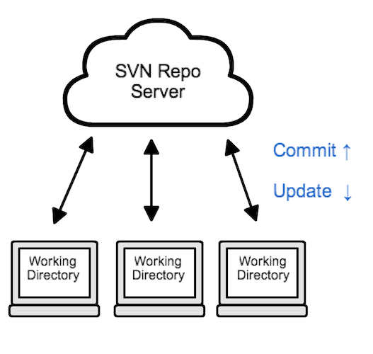
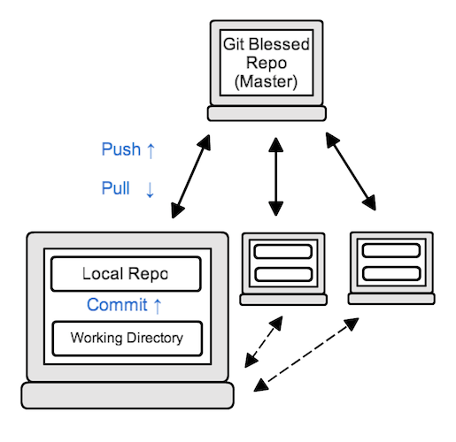
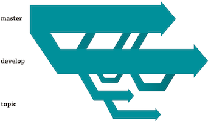
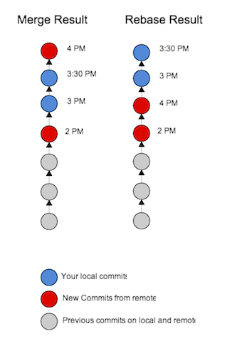
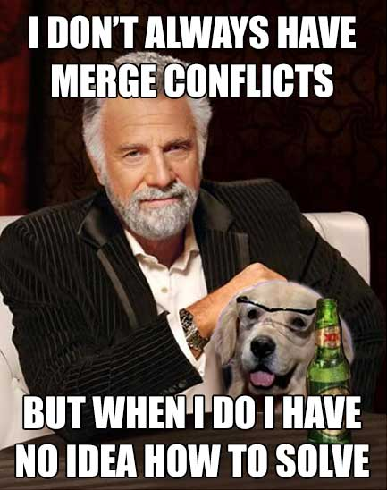
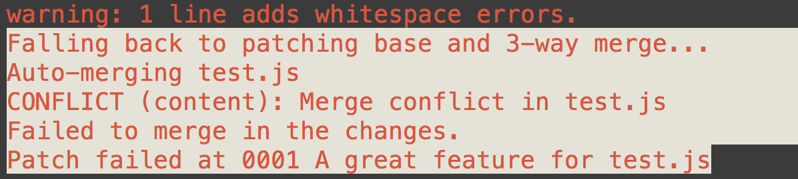
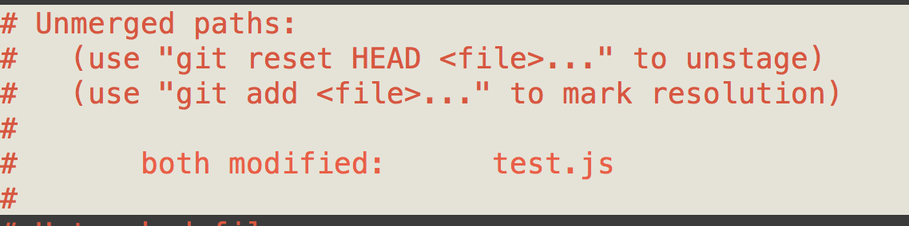
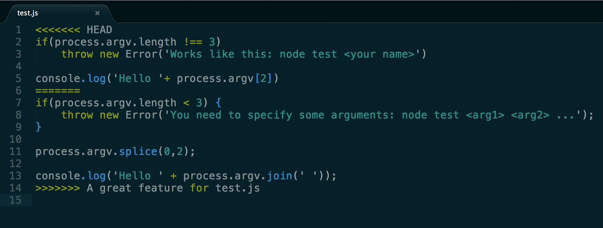

Introduction
Justin Martin
Code for fun and for work
Front End Dev at Domo
Creator of Junior
Hipster?
Mike Trionfo
VP, Software Engineering
Entreprenuer
Community Contributor
Huge BYU fan
@miketrionfo
Esteban Araya
eSteve
Overview
- What is a VCS?
- How is Git different?
- How can Git help with school assignments?
- History
What is a VCS?
How is Git different?
- Distributed Repositories
- Better Branching and Merging
SVN Diagram

GIT Diagram

Distributed Repositories
- Multiple backups. Everyone has a local backup on their machine.
- The server repo is the same as everyone's local repo. It's just "blessed" to be the master repo.
- Can work separately, committing changes, without pushing them to the server.
Better Branching and Merging

- Git tries to make branching simple and easy. You can create and delete branches in seconds.
- Easy to switch contexts.
- Helps for testing, developing, experiments, and releasing.
How can git help with school?
- Have a complete history of which changes you have made (good for tracking down bugs).
- Have an online backup that you can access from anywhere.
History
Using git
- HOW TO CLONE A REPO
- HOW TO ADD NEW CONTENT
- HOW TO GET NEW CONTENT
- HOW TO HANDLE MERGE CONFLICTS
- HOW TO USE BRANCHES
CLONE
'git clone' makes a full copy of the repository
HOW TO GET NEW CONTENT
- 'git pull' fetches commits from the remote repository and merges them into your local repository.
- It is really like an alias for doing a 'git fetch' then a 'git merge'
- In short, a rebase will take your local commits and put them on top of the new commits
- To do a rebase instead of a merge when you do a pull, just do 'git pull --rebase'
Merge vs Rebase

HOW TO HANDLE MERGE CONFLICTS

The Inevitable merge conflict
'git pull' CONFLICT!!!1!

'git status'

MERGE. ADD. COMMIT.
